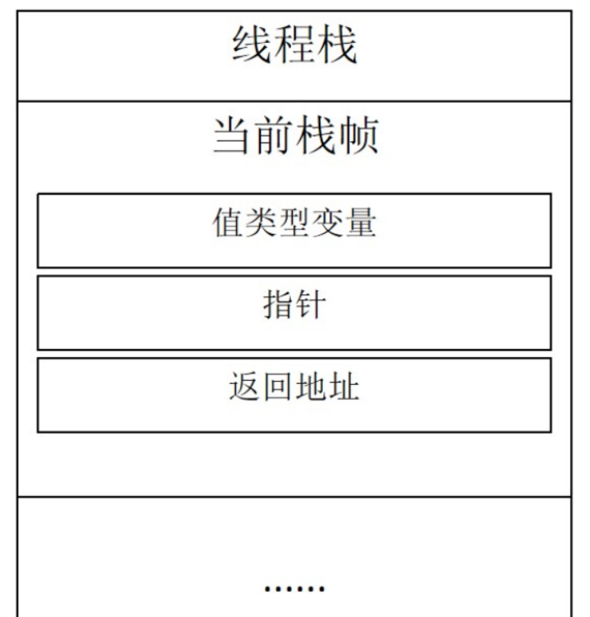
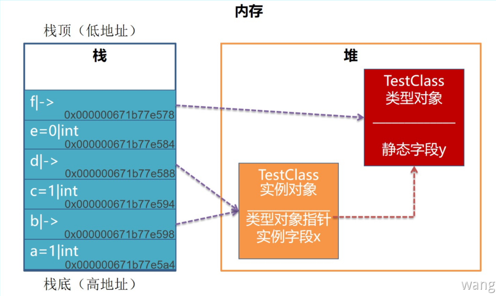
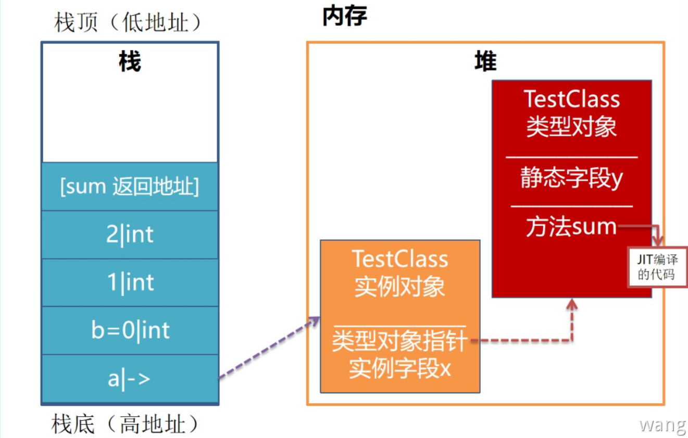

值类型和引用类型
C#的类型一共分为两类
- 值类型
ValueType - 引用类型
ReferenceType
值类型和引用类型都继承自System.Object类。不同的是几乎所有的引用类型都直接从System.Object继承，而值类型则继承System.ValueType。System.ValueType直接派生于System.Object。即System.ValueType本身是一个类类型，而不是值类型。关键在于ValueType重写了Equals()方法，从而对值类型按照实例的值来比较，而不是引用地址来比较。
区别
- 引用类型变量的赋值只复制对对象的引用而不复制对象本身。而将一个值类型变量赋给另一个值类型变量时，将复制包含的值
- 引用类型可以派生出新的类型，而值类型不能
- 引用类型可以包含
null值，值类型不能（可空类型功能允许将 null 赋给值类型） - 引用类型存储在堆中。类实例化时会在堆中开辟一部分空间存储类的实例，类实例的引用（指针）还是存储在栈中。值类型总是分配在它声明的地方**(作为字段时跟随其所属的实例存储在堆上。作为局部变量时存储在栈上)。**
误区：“引用类型存储在堆上，值类型保存在栈上”，这句话前半部分是正确的，引用类型的实例总是在堆上创建的。但是变量的值是在声明的位置存储的，所以假定一个类中有一个
int类型的实例变量，那么这个变量的值是跟对象中的其他数据在一起也就是堆上。只有局部变量（方法内部声明的变量）和方法参数在栈上。
使用场合
- 值类型：在内存管理方面具有更好的效率，但不支持多态不能派生新的类型，适合用做存储数据的载体
- 引用类型：支持多态可以派生新的类型
内存的逻辑划分之栈和堆
C#程序在CLR上运行时，内存从逻辑上划分两大块：栈、堆，这两个基本元素组成了C#程序的运行环境。
- 栈：在程序运行的时候，每个线程(
Thread)都会维护一个自己的专属线程堆栈 - 堆：是程序在运行的时候请求操作系统分配给自己的内存空间，储存着使用的各种对象等信息，跟栈不同的是它们被调用完毕不会立即被清理掉
栈的特征
- 栈空间比较小（每个线程只有一个栈占用
1MB，栈内存溢出抛出StackOverflowException但是读取速度快 - 数据只能从栈的顶端插入或删除，是连续存储的，把数据放到栈顶称为入栈，从栈顶删除数据称为出栈
- 存放方法的参数、局部变量、返回地址等值，当一个方法执行完毕后立刻自动清除
栈的结构

栈帧：每个方法执行都会分配一块独立的内存空间来存储方法运行需要的数据，按后入先出的方式进入和弹出线程栈。
堆的特征
- 堆空间比较大（32位最多分配1.5GB，64位最多分配8TB，堆内存溢出抛出
OutOfMemoryException，但是读取速度慢 - 数据存储不连续，与栈不同：堆里的内存能够以任意顺序存入和移除
- 存放引用类型的对象，通过
GC清理
堆的结构
参考：Drill Into .NET Framework Internals to See How the CLR Creates Runtime Objects
代码运行时内存分配情况
变量和对象在内存中的分配
示例代码：
1 | class TestClass |
内存分配情况

Test1()方法被调用：系统为该方法创建一个栈桢，用于存储该方法使用到的值类型的变量、指针、调用其他方法的返回地址等- 方法执行到
var a=1：变量a的值1首先入栈存储，栈的起始地址为0x000000671b77e5a4 - 方法执行到
var b=new TestClass()：在堆中开辟一块内存用于存储TestClass实例对象，然后变量b入栈，变量b的值为TestClass实例对象的引用（实际存储的是TestClass实例在堆上的内存地址，也就是指针） - 方法执行到
var c=a：将变量c压入栈，因为a是值类型，所以将变量a的值拷贝赋值给c - 方法执行到
var d=b：将变量d压入栈，因为b是引用类型，所以将变量b引用的地址赋值给变量d，此时变量b和d都指向堆内存中的TestClass实例对象 - 方法执行到
var e=d.x时：将变量e压入栈，因为x字段是值类型，所以将x的实际值0（int类型初始化的默认值为0）赋值给e - 方法执行到
var f=TestClass.y：将变量f压入栈，因为y字段是引用类型，所以f变量的值为y字段的引用
方法参数在栈中的分配
示例代码：
1 | class TestClass |
内存分配情况：

- 方法执行到
var a=new TestClass(): 在堆中开辟一块内存用于存储TestClass实例对象，然后变量a入栈，变量a的值为TestClass实例对象的引用（实际上存储的是TestClass实例在堆上的内存地址，也就是指针） - 方法执行到
int b = 0：将局部变量b压入栈，因为b是值类型所以值0存储在栈中 - 方法执行到
b=a.sum(1,2)：首先两个int类型实参1，2分别入栈，并将sum方法的返回地址压入栈，sum方法执行结束之后应返回至该位置
System.String
- 特性一：字符串是不可变的，字符串一经创建便不能更改，不能变长、变短或修改其中的任何字符。
- 特性二：字符串驻留（字符串池化），
CLR可通过一个String对象共享多个完全一致的String内容，这样能减少系统中字符串的数量，从而节省内存。String的驻留机制实际上是在SystemDomain中进行的。 当CLR被加载之后，会在SystemDomain对应的managed heap中创建一个Hashtable，Hashtable中记录了所有在代码中使用字面量声明的字符串实例的引用，Hashtable的Key为字符串本身，Value为字符串对象的地址。
示例代码：
1 | static void Main(string[] args) |
静态字段和属性
类型的静态字段和静态属性的支持字段（例如 int）存储在类型对象（加载堆）中。
JIT 会在进行编译时找到这些静态成员的地址，并在之后的编译时硬编码它们，然后写在机器码中。
这样，再次访问静态成员时就不需要通过类型对象。程序中所有类型的静态成员组成一个全局的数组，它包括每一个类型中的基元类型静态成员的内存地址。
数组的地址会被钉死 (pinned)，使得它不会被 GC 回收掉（除非卸载应用程序域），这样机器码中的硬编码将一直有意义，直到程序终止。